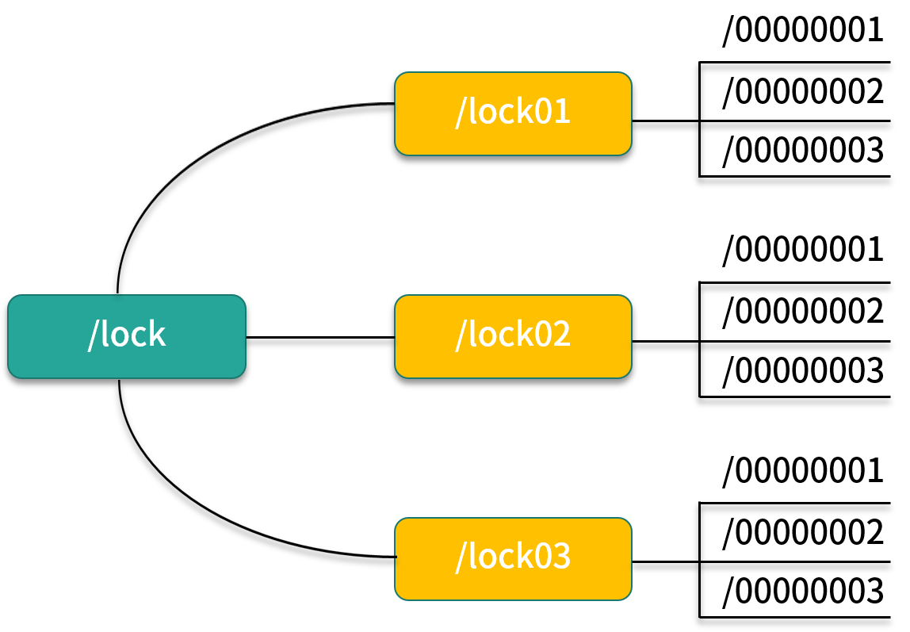

- 00 开篇词：搭建分布式知识体系，挑战高薪 Offer.md
- 01 如何证明分布式系统的 CAP 理论？.md
- 02 不同数据一致性模型有哪些应用？.md
- 03 如何透彻理解 Paxos 算法？.md
- 04 ZooKeeper 如何保证数据一致性？.md
- 05 共识问题：区块链如何确认记账权？.md
- 06 如何准备一线互联网公司面试？.md
- 07 分布式事务有哪些解决方案？.md
- 08 对比两阶段提交，三阶段协议有哪些改进？.md
- 09 MySQL 数据库如何实现 XA 规范？.md
- 10 如何在业务中体现 TCC 事务模型？.md
- 11 分布式锁有哪些应用场景和实现？.md
- 12 如何使用 Redis 快速实现分布式锁？.md
- 13 分布式事务考点梳理 + 高频面试题.md
- 14 如何理解 RPC 远程服务调用？.md
- 15 为什么微服务需要 API 网关？.md
- 16 如何实现服务注册与发现？.md
- 17 如何实现分布式调用跟踪？.md
- 18 分布式下如何实现配置管理？.md
- 19 容器化升级对服务有哪些影响？.md
- 20 ServiceMesh：服务网格有哪些应用？.md
- 21 Dubbo vs Spring Cloud：两大技术栈如何选型？.md
- 22 分布式服务考点梳理 + 高频面试题.md
- 23 读写分离如何在业务中落地？.md
- 24 为什么需要分库分表，如何实现？.md
- 25 存储拆分后，如何解决唯一主键问题？.md
- 26 分库分表以后，如何实现扩容？.md
- 27 NoSQL 数据库有哪些典型应用？.md
- 28 ElasticSearch 是如何建立索引的？.md
- 29 分布式存储考点梳理 + 高频面试题.md
- 30 消息队列有哪些应用场景？.md
- 31 集群消费和广播消费有什么区别？.md
- 32 业务上需要顺序消费，怎么保证时序性？.md
- 33 消息幂等：如何保证消息不被重复消费？.md
- 34 高可用：如何实现消息队列的 HA？.md
- 35 消息队列选型：Kafka 如何实现高性能？.md
- 36 消息队列选型：RocketMQ 适用哪些场景？.md
- 37 消息队列考点梳理 + 高频面试题.md
- 38 不止业务缓存，分布式系统中还有哪些缓存？.md
- 39 如何避免缓存穿透、缓存击穿、缓存雪崩？.md
- 40 经典问题：先更新数据库，还是先更新缓存？.md
- 41 失效策略：缓存过期都有哪些策略？.md
- 42 负载均衡：一致性哈希解决了哪些问题？.md
- 43 缓存高可用：缓存如何保证高可用？.md
- 44 分布式缓存考点梳理 + 高频面试题.md
- 45 从双十一看高可用的保障方式.md
- 46 高并发场景下如何实现系统限流？.md
- 47 降级和熔断：如何增强服务稳定性？.md
- 48 如何选择适合业务的负载均衡策略？.md
- 49 线上服务有哪些稳定性指标？.md
- 50 分布式下有哪些好用的监控组件？.md
- 51 分布式下如何实现统一日志系统？.md
- 52 分布式路漫漫，厚积薄发才是王道.md
11 分布式锁有哪些应用场景和实现？
电商网站都会遇到秒杀、特价之类的活动，大促活动有一个共同特点就是访问量激增，在高并发下会出现成千上万人抢购一个商品的场景。虽然在系统设计时会通过限流、异步、排队等方式优化，但整体的并发还是平时的数倍以上，参加活动的商品一般都是限量库存，如何防止库存超卖，避免并发问题呢？分布式锁就是一个解决方案。
如何理解分布式锁
我们都知道，在业务开发中，为了保证在多线程下处理共享数据的安全性，需要保证同一时刻只有一个线程能处理共享数据。
Java 语言给我们提供了线程锁，开放了处理锁机制的 API，比如 Synchronized、Lock 等。当一个锁被某个线程持有的时候，另一个线程尝试去获取这个锁会失败或者阻塞，直到持有锁的线程释放了该锁。
在单台服务器内部，可以通过线程加锁的方式来同步，避免并发问题，那么在分布式场景下呢？

分布式场景下解决并发问题，需要应用分布式锁技术。如上图所示，分布式锁的目的是保证在分布式部署的应用集群中，多个服务在请求同一个方法或者同一个业务操作的情况下，对应业务逻辑只能被一台机器上的一个线程执行，避免出现并发问题。
分布式锁的常用实现
实现分布式锁目前有三种流行方案，即基于数据库、Redis、ZooKeeper 的方案。
基于关系型数据库
基于关系型数据库实现分布式锁，是依赖数据库的唯一性来实现资源锁定，比如主键和唯一索引等。
以唯一索引为例，创建一张锁表，定义方法或者资源名、失效时间等字段，同时针对加锁的信息添加唯一索引，比如方法名，当要锁住某个方法或资源时，就在该表中插入对应方法的一条记录，插入成功表示获取了锁，想要释放锁的时候就删除这条记录。
下面创建一张基于数据库的分布式锁表：
CREATE TABLE `methodLock` (
`id` int(11) NOT NULL AUTO_INCREMENT COMMENT '主键',
`method_name` varchar(64) NOT NULL DEFAULT '' COMMENT '锁定的方法或者资源',
PRIMARY KEY (`id`),
UNIQUE KEY `uidx_method_name` (`method_name `) USING BTREE
) ENGINE=InnoDB DEFAULT CHARSET=utf8 COMMENT='对方法加锁';
当希望对某个方法加锁时，执行以下 SQL 语句：
insert into methodLock(method_name) values ('method_name');
在数据表定义中，我们对 method_name 做了唯一性约束，如果有多个请求同时提交到数据库的话，数据库会保证只有一个操作可以成功，那么就可以认为操作成功的那个线程获得了该方法的锁，可以执行后面的业务逻辑。
当方法执行完毕之后，想要释放锁的话，在数据库中删除对应的记录即可。
基于数据库实现分布式锁操作简单，但是并不是一个可以落地的方案，有很多地方需要优化。
存在单点故障风险
数据库实现方式强依赖数据库的可用性，一旦数据库挂掉，则会导致业务系统不可用，为了解决这个问题，需要配置数据库主从机器，防止单点故障。
超时无法失效
如果一旦解锁操作失败，则会导致锁记录一直在数据库中，其他线程无法再获得锁，解决这个问题，可以添加独立的定时任务，通过时间戳对比等方式，删除超时数据。
不可重入
可重入性是锁的一个重要特性，以 Java 语言为例，常见的 Synchronize、Lock 等都支持可重入。在数据库实现方式中，同一个线程在没有释放锁之前无法再次获得该锁，因为数据已经存在，再次插入会失败。实现可重入，需要改造加锁方法，额外存储和判断线程信息，不阻塞获得锁的线程再次请求加锁。
无法实现阻塞
其他线程在请求对应方法时，插入数据失败会直接返回，不会阻塞线程，如果需要阻塞其他线程，需要不断的重试 insert 操作，直到数据插入成功，这个操作是服务器和数据库资源的极大浪费。
可以看到，借助数据库实现一个完备的分布式锁，存在很多问题，并且读写数据库需要一定的性能，可能会影响业务执行的耗时。
下面我们来看下应用缓存如何实现。
应用 Redis 缓存
相比基于数据库实现分布式锁，缓存的性能更好，并且各种缓存组件也提供了多种集群方案，可以解决单点问题。
常见的开源缓存组件都支持分布式锁，包括 Redis、Memcached 及 Tair。以常见的 Redis 为例，应用 Redis 实现分布式锁，最直接的想法是利用 setnx 和 expire 命令实现加锁。
在 Redis 中，setnx 是「set if not exists」如果不存在，则 SET 的意思，当一个线程执行 setnx 返回 1，说明 key 不存在，该线程获得锁；当一个线程执行 setnx 返回 0，说明 key 已经存在，那么获取锁失败，expire 就是给锁加一个过期时间。
伪代码如下：
if(setnx(key,value)==1){
expire(key,expireTime)
try{
//业务处理
}finally{
//释放锁
del(key)
}
}
使用 setnx 和 expire 有一个问题，这两条命令可能不会同时失败，不具备原子性，如果一个线程在执行完 setnx 之后突然崩溃，导致锁没有设置过期时间，那么这个锁就会一直存在，无法被其他线程获取。
为了解决这个问题，在 Redis 2.8 版本中，添加了 SETEX 命令，SETEX 支持 setnx 和 expire 指令组合的原子操作，解决了加锁过程中失败的问题。
添加 SETEX 命令， 就是一个完善的分布式锁吗？在下一课时的内容中我会详细分享。
基于 ZooKeeper 实现
ZooKeeper 有四种节点类型，包括持久节点、持久顺序节点、临时节点和临时顺序节点，利用 ZooKeeper 支持临时顺序节点的特性，可以实现分布式锁。
当客户端对某个方法加锁时，在 ZooKeeper 中该方法对应的指定节点目录下，生成一个唯一的临时有序节点。

判断是否获取锁，只需要判断持有的节点是否是有序节点中序号最小的一个，当释放锁的时候，将这个临时节点删除即可，这种方式可以避免服务宕机导致的锁无法释放而产生的死锁问题。
下面描述使用 ZooKeeper 实现分布式锁的算法流程，根节点为 /lock：
- 客户端连接 ZooKeeper，并在 /lock 下创建临时有序子节点，第一个客户端对应的子节点为 /lock/lock01/00000001，第二个为 /lock/lock01/00000002；
- 其他客户端获取 /lock01 下的子节点列表，判断自己创建的子节点是否为当前列表中序号最小的子节点；
- 如果是则认为获得锁，执行业务代码，否则通过 watch 事件监听 /lock01 的子节点变更消息，获得变更通知后重复此步骤直至获得锁；
- 完成业务流程后，删除对应的子节点，释放分布式锁。
在实际开发中，可以应用 Apache Curator 来快速实现分布式锁，Curator 是 Netflix 公司开源的一个 ZooKeeper 客户端，对 ZooKeeper 原生 API 做了抽象和封装，若感兴趣可自行查询资料了解。
总结
这一课时分享了分布式锁的应用场景和几种实现，包括分布式锁的概念，使用数据库方式、缓存和 ZooKeeper 实现分布式锁等。